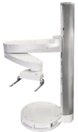

Systems
BioNex Solutions is revolutionizing laboratory automation by rethinking productivity, reliability, and flexibility. Our system designs focus on eliminating the "idle time" of each operation in a workflow (e.g., microplate handling, material transfer, etc…). Each system is easily customized with proven standard products to automate any application.
Direct Drive Robot
An exceptionally fast robot with a 360 degree reach, enabling highly flexible and configurable system designs for high throughput applications.
Hive Robot
Designed for vertical integration the Hive Robot utilizes space above and below the reach of a standard robotic arm.

BenchBot
A compact and sophisticated microplate handling robot for medium throughput applications, whether integrated on a lab bench or on a platform.

VWorks Automation Control Software
At the heart of BioNex Systems is the proven VWorks Automation Control Software. It’s outstanding event-driven controller and innovative error recovery technology is fast becoming the standard for controlling a wide range of automation systems at the world’s leading pharmaceutical and biotechnology companies.
Key Features and Benefits
- Scalable: From small benchtop workstations to large microplate manufacturing systems, BioNex will design a custom automation platform to meet your needs.
- Fast: Combine a reliable robot with the most sophisticated automation control software to achieve unsurpassed throughput capabilities.
- Expandable: Hardware and software architecture allow seamless expansion as your research needs grow.
- Affordable: With a diverse range of robots and platforms, BioNex makes automation affordable for any laboratory.